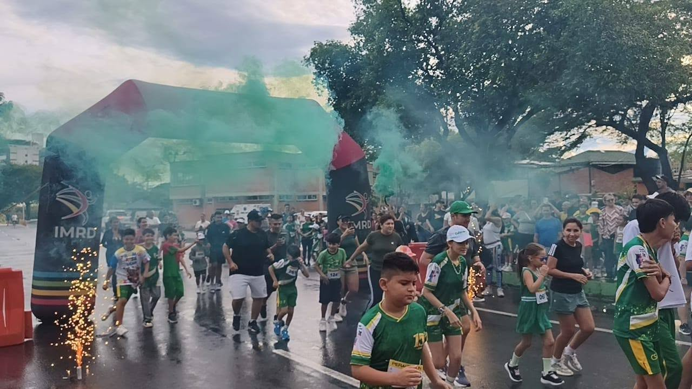

2000
Comienzo
Nace la idea de crear un periódico escolar que documente la vida del colegio.

Desde 2016 • Periodismo escolar
Tinta Propia nació como una iniciativa de comunicación escolar para dar voz a los estudiantes y compartir las historias que hacen parte de nuestra comunidad educativa.
A través de noticias, entrevistas, crónicas y contenidos digitales, buscamos informar sobre los acontecimientos de la institución, destacar el talento estudiantil y mantener a toda la comunidad conectada con lo que sucede dentro y fuera de las aulas.
Cada historia cuenta. Cada voz importa.
Nuestra historia
Nace la idea de crear un periódico escolar que documente la vida del colegio.
Se exploran nuevas formas de contar historias con rigor, entusiasmo y sentido comunitario.

Se define una estructura editorial para organizar contenidos, voces y proyectos estudiantiles.

Se incorporan nuevas ideas y formatos para ampliar la participación dentro y fuera del aula.

El periódico fortalece su identidad visual y da paso a historias más cercanas y expresivas.

Se consolidan procesos más sólidos de narración, diseño y participación estudiantil.

Se impulsan nuevas propuestas para documentar la vida escolar con más alcance y valor.

La comunidad empieza a compartir sus historias en una plataforma digital más moderna.

La próxima etapa apuesta por seguir creciendo con innovación, bienestar y visión de futuro.

Lo que nos mueve
Informar con responsabilidad y veracidad sobre los acontecimientos de la institución, dando voz a los estudiantes y difundiendo sus proyectos, talentos y experiencias.
Ser un medio de comunicación escolar reconocido por su creatividad, compromiso y capacidad para conectar a la comunidad educativa mediante contenidos digitales de calidad.
Responsabilidad, respeto, creatividad, honestidad, participación e inclusión. Son los principios que orientan la manera en que contamos las historias y nos relacionamos con nuestra comunidad.
Tu voz también cuenta
¿Tienes un proyecto, participas en un grupo extracurricular o conoces una actividad que merece ser compartida? En Tinta Propia queremos conocerla.
Escribe tu historia